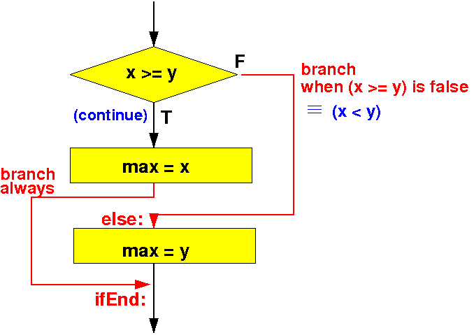

Flow chart of the if-else statement
if ( condition ) ----> |
statement1(s); V
else +--------------+ FALSE
statement2(s); | condition |--------+
+--------------+ |
| |
| TRUE |
| |
V |
statement1(s) |
| |
+---------+ |
| |
| +<---------------+
| |
| V
| statement2(s)
| |
| V
+-------->+
|
V
|
Assembler codes to evaluate "condition" (with cmp)
FALSE
Branch on the FALSE outcome of "condition" to label A: ----+
| |
| (TRUE) |
| |
V |
Assembler codes for "statement1(s)" |
|
Branch (always) to label B: -----------+ |
| |
| |
A: Assembler codes for "statement2(s)" <----------------------+
| |
V |
B: +<---------------------------+
|
V
|
All you need to do is: code the flow chart using the correct conditional branch instructions !!!
Example if-else-statement (find the maximum of x and y)
int x;
int y;
int max;
if ( x >= y )
max = x;
else
max = y;
|
As before, I will omit discussing the variable definitions !
(I showed you the variable definitions to give you their data type information !)
if ( x >= y )
max = x;
else
max = y;
|
The corresponding flow chart is:
|  |
main:
movw r0, #:lower16:x
movt r0, #:upper16:x // r0 = addr(x)
ldr r0, [r0] // r0 = x
movw r1, #:lower16:y
movt r1, #:upper16:y // r1 = addr(y)
ldr r1, [r1] // r1 = y
cmp r0, r1 // compare x ? y
blt else // if ( x < y ) Branch to "else"
// max = x
movw r0, #:lower16:x
movt r0, #:upper16:x // r0 = addr(x)
ldr r0, [r0] // r0 = x
movw r2, #:lower16:max
movt r2, #:upper16:max // r2 = addr(max)
str r0, [r2] // max = r0 (= x)
b ifEnd // Skip over the else part !!!
else: // max = y
movw r0, #:lower16:y
movt r0, #:upper16:y // r0 = addr(y)
ldr r0, [r0] // r0 = y
movw r2, #:lower16:max
movt r2, #:upper16:max // r2 = addr(max)
str r0, [r2] // max = r0 (= y)
ifEnd:
/* --------------------------------------------------
Begin of the permanent program variables
-------------------------------------------------- */
.data
x: .4byte 7 // Try a value > y
y: .4byte 10
max: .kip 4
|
DEMO: /home/cs255001/demo/asm/6-if/if-else1.s